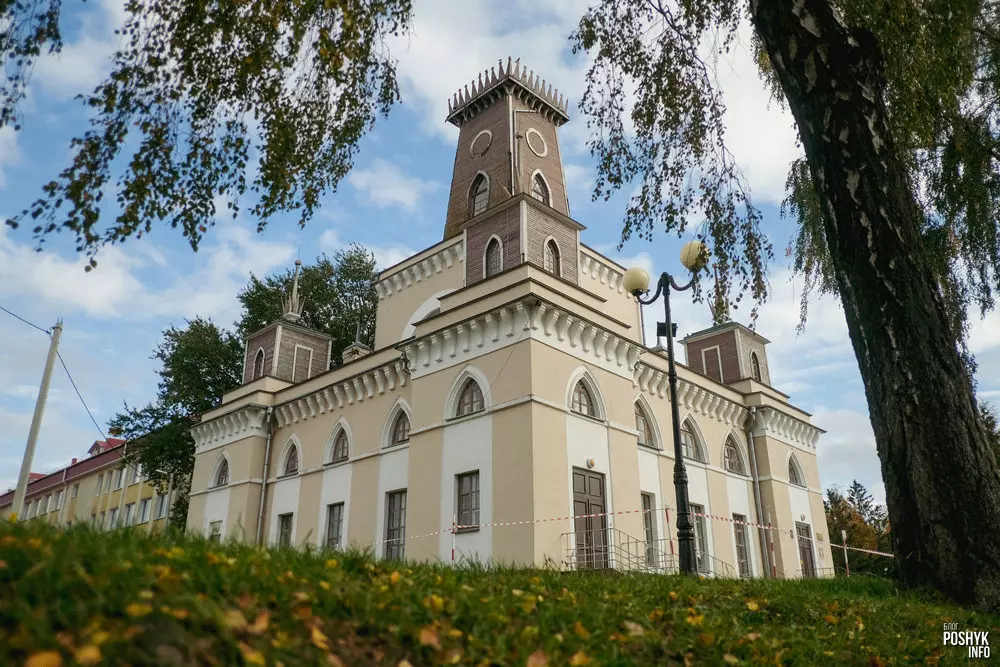
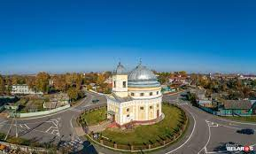
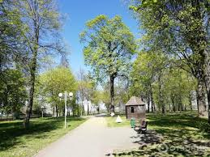

Чечерск — это город, основанный в 1682 году, расположенный в Беларуси, в Гомельской области. Население
города составляет около 6,000 человек. Чечерск славится своими историческими памятниками и живописными
пейзажами. Здесь вы сможете насладиться уникальной атмосферой и узнать много интересного о его прошлом.
Город имеет богатую историю, наполненную важными событиями и личностями, которые сыграли ключевую роль в
развитии региона.
Достопримечательности

Церковь Преображения Господня

Местные парки и скверы
Чечерск богат на достопримечательности, которые привлекают туристов со всей Беларуси и из-за её пределов.
Одной из главных достопримечательностей является Чечерская ратуша, уникальный памятник архитектуры XVIII
века. Ратуша является символом города и хранит в себе множество исторических артефактов и экспозиций.
Ещё одной важной достопримечательностью является церковь Святого Георгия. Это древнее сооружение, которое
привлекает не только верующих, но и любителей истории и архитектуры. Церковь известна своими уникальными
фресками и иконами, а также атмосферой умиротворения и покоя.
Местные парки и скверы также заслуживают внимания. Они идеально подходят для прогулок и отдыха на
природе. В Чечерске много зелёных зон, где можно насладиться свежим воздухом и прекрасными видами.
Особой популярностью пользуется центральный парк, где часто проводятся городские мероприятия и
праздники.
Помимо этого, в городе есть несколько музеев, которые рассказывают о богатой истории и культурном
наследии Чечерска. В них можно увидеть уникальные экспонаты, связанные с жизнью и бытом местных жителей
на протяжении веков.
История
Чечерск имеет долгую и богатую историю, начавшуюся с его основания в 1682 году. Город прошёл через
множество исторических этапов, включая периоды расцвета и упадка. В XVIII веке Чечерск был важным
торговым центром, благодаря своему выгодному расположению на берегу реки Сож. Это способствовало
развитию экономики и культуры города.
В разные исторические периоды Чечерск был ареной многочисленных событий. В годы Великой Отечественной
войны город сильно пострадал, но благодаря усилиям местных жителей и правительства был восстановлен и
вновь обрел своё былое величие. Многие здания и сооружения были реконструированы, что позволило
сохранить исторический облик города.
В послевоенные годы Чечерск активно развивался, строились новые жилые кварталы, школы, больницы и другие
социальные объекты. Город стал центром культурной жизни региона, здесь проводились и проводятся
многочисленные фестивали, выставки и концерты.
Чечерск также известен своими знаменитыми уроженцами, которые внесли значительный вклад в науку, культуру
и искусство. Город гордится своими выдающимися деятелями, чьи имена навсегда вписаны в историю Беларуси.
Сегодня Чечерск продолжает развиваться и привлекать туристов со всего мира. Город бережно хранит своё
историческое наследие, одновременно шагая в ногу с современностью, предлагая гостям и жителям
разнообразные возможности для отдыха и развлечений.